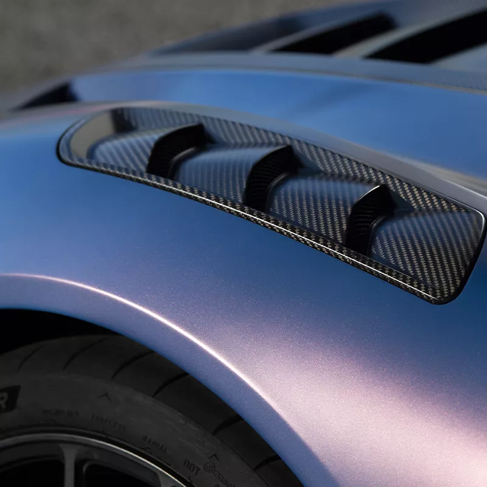
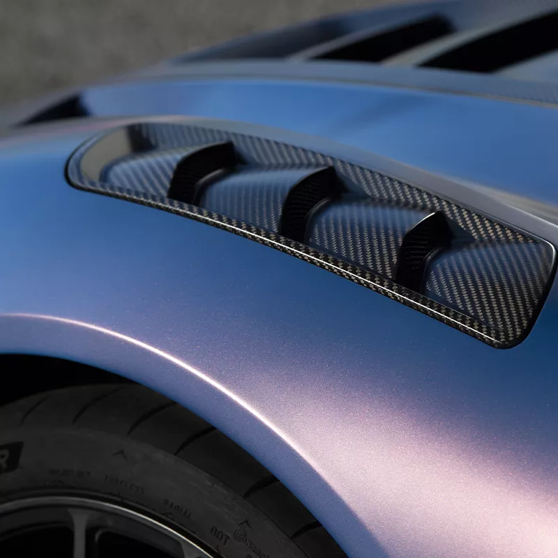

Maserati is an iconic Italian automobile brand, founded in 1914, embodying luxury, performance, and elegance. Known for its high-end sports cars and refined sedans, it stands out with bold design and powerful engines, often developed in partnership with Ferrari. The trident, the brand's symbol, reflects its rich heritage and ties to the city of Modena. Maserati combines artisanal tradition with modern innovation, offering a prestigious and dynamic driving experience.

Maserati is proud of its long and glorious past
Officine Alfieri Maserati was founded on December 1, 1914, in Bologna, Italy. Since then, Maserati has played a major role in the history and development of sports car culture. More than a century of activity has brought amazing results, both on the road and the track, as well as periods of great challenges, which have helped the company forge its character and personality.
MC20
.png)
Granturismo
.png)
Grancabrio

GT2 Stradale
An Italian story. A global icon.
When the Maserati brothers opened Officine Alfieri Maserati in the heart of Bologna, Italy, in 1914, they could hardly imagine the impact they would have worldwide. Alfieri, Ettore, Ernesto, and Bindo: four brothers united by an unbreakable passion for cars and engines. Their vision, enthusiasm, and expertise proved to be the cornerstone of what would one day become a global brand, universally recognized as a symbol of excellence in engines.
 

GranTurismo MC
The identity of the different teams that will take part in the Maserati GranTurismo MC in 2016 is beginning to take shape. Over the past six seasons, the cars have raced in the Trofeo Maserati, a championship that ended in Abu Dhabi (UAE) last December. Since then, the vehicles have been purchased by private drivers and teams, who have modified them to comply with GT4 competition regulations. The main events where the cars will compete next season include the Pirelli World Challenge (PWC) in North America, the Competition 102 GT4 European Series, the Euroseries by Nova Race, and national GT championships.